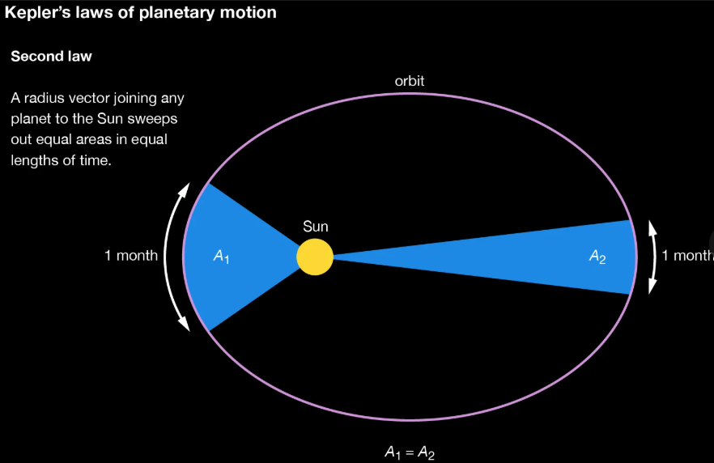

Keplers Second Law

The sun-Planet line sweeps out equal area in equal time
If and only if
angular momentum of the Sun and Planet is conserved
m(vp)(rp) = m(va)(ra)
where mis the mass of the star, also noticed that its canceled out... leaving us with
(vp)(rp) = (va)(ra)
we can devide both sides by (rp)(va)
and we get
(vp)/(va) = (ra)/(rp)
A subset equation for Velocityas a ratioto the radius